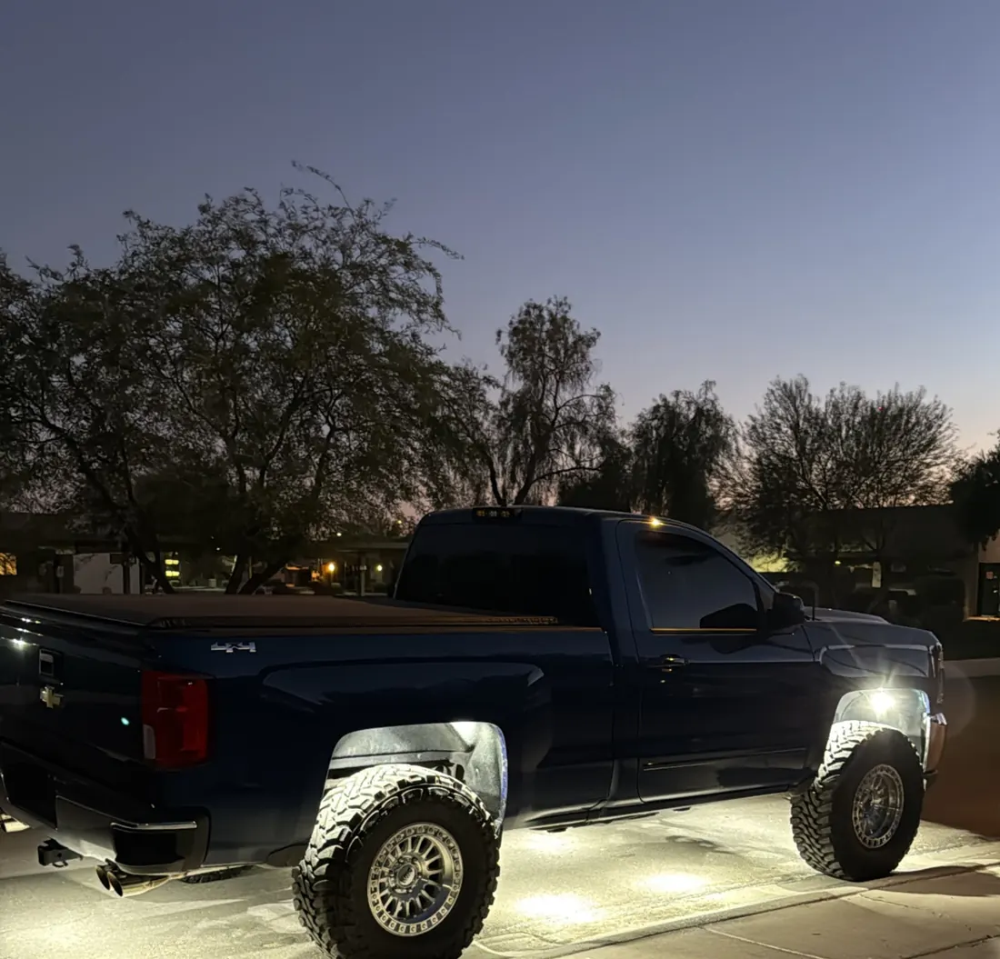

DIY Wiring
84-Chip Pure White Rock Lights
- 84 LED Chip
- 20 W
- Pack Of 4
$55 pack of 4
Truck Rock Lights · Mesa, AZ
Most of what we light is a pickup, and on a truck the layout matters as much as the light. Here's where every light goes at 8, 16, 20 and 30, so you can pick a count before you buy or book.
5.0★ from 33 reviews · installed in Mesa · kits ship anywhere

A four-light kit lights the wheel wells on a car. On a full-size pickup, four lights leave the doors and bed in shadow, and the truck looks like it has spotlights under it instead of a glow.
Trucks are long and they sit high, so the light has farther to travel to the ground and more length to cover, which is why our pure white lights come in packs of four you can stack and our kits go up to 20 and 24 lights.
Every photo below is a real ITM install, with where the lights went written on it. Use it like a menu.


The layouts build on each other. Each step up keeps everything from the last one and adds a zone.
| Lights | Where they go | What it fixes |
|---|---|---|
| 8 | 2 in each wheel well | Lights the tires and the ground at each corner |
| 12 | Wheel wells, plus 2 on each side | Fills the dark gap under the doors |
| 16 | Wheel wells, plus 4 on each side | An even glow down the full length of a crew cab |
| 20 | 16, plus 2 on each bumper | Lights the front and the tailgate, handy for hitching up |
| 22 | 20, plus 2 in the grille | Adds glow at the front end |
| 26 | Wheel wells, 5 per side, 3 per bumper, 2 in the grille | Brighter sides and bumpers on a long truck |
| 30 | 26, plus 4 down the middle | Lights the ground under the center of the truck |
If you drive a crew cab, 16 is where the sides stop looking patchy. A regular cab or a short bed can get away with 12. If you tow or haul at night, go to 20 so the bumpers light up the hitch and the tailgate. Lifted trucks on big tires have more ground to light, so look at 26 or 30.
Not sure? Book the install and tell us how you use the truck. We'll quote the count we'd run before anything gets mounted.
For a white glow, the 84-chip pack is the brightest light you wire yourself, and the 219-chip kit comes in counts up to 24. For color, the RGBW kit runs up to 20 lights from one app. For white and amber in one light, there's the switchback kit. Full comparison on our rock lights page.
$55 pack of 4

$240 to $920 4 to 24 lights

$205 to $705 4 to 20 lights
The length of a truck is what makes rock lights harder than they look. Sixteen lights spread from bumper to bumper means long wire runs past the exhaust, the suspension and the driveshaft. Those runs need to stay clear of heat and anything that moves, and every splice along the way needs to be sealed.
That's the part we're picky about. See how we do it in rock light installation.
Every light we put on a vehicle gets the same four things. None of them are extras, and none of them depend on who's working that day.
We start every truck at 8, two per wheel well. Most crew cabs look best at 16, with four more on each side. Go to 20 if you want the bumpers lit for hitching up.
They light the ground around the truck, so you can see where you're stepping, parking or hooking up, and they make the truck stand out at night.
Yes. Our lights mount to the frame and inside the wheel wells, so they go on Chevy, GMC, Ford and Ram trucks alike. Lifted or stock doesn't matter.
Yes. Our magnetic mounts fit the 72 and 84-chip lights, so you can skip the drill.
Yes. Our pure white lights come in packs of four, so you can start at 8 and add packs. Kits are sold by count, so pick the size you'll end up at.
Installs In Mesa
Bring our kit or your own lights. We text you to confirm your drop-off and quote.